针对文件服务类功能（图像保存、文件保存（TXT和EXCEL）/删除图像）统一升级，提升产品效能。
| 已支持服务版本 |
|---|
| 6.2.231版本及以上（含深度学习、3D版本） |
| 6.3.220版本及以上 |
原因： 服务进程不支持多进程同时使用，已打开第1个VA软件，再次打开第2个VA时导致
解决办法： 不建议一台设备上开启2个或以上的VA软件同时使用，同时开启时，会导致其中一个VA进行存图时，存图失败
现象： 软件运行过程中，软件右下角出现弹窗报错“[警告]文件保存压力预警！”
原因： 工程存图的压力较大，提示用户当前存图压力已达到一个临界值
解决办法： 暂不影响正常存图，如果压力继续上涨，则会提示问题3报错
现象： 软件运行过程中，软件右下角出现弹窗报错“文件保存队列到达上限值，当前图像存储功能暂时关闭。建议修改工程参数，减轻图像存储负载，可使图像存储功能恢复。”
原因： 工程存图的压力较大
解决办法： 修改工程，减少存图压力或增加延时工具延长工程执行CT；或者联系设备厂家更换高性能硬盘。
现象： 软件运行过程中，输出警告窗口出现“工程数据无法写入硬盘，可能由于硬盘空间不足或磁盘损坏等原因”
原因： 可能是磁盘空间不足导致或磁盘已损坏
解决办法： 查看存图路径磁盘剩余空间是否充足；若磁盘损坏则需更换磁盘
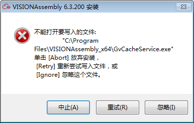
现象： 软件安装时，出现“不能打开要写入的文件”报错
原因： 可能是磁盘空间不足导致
解决办法： 点击“中止”，换一个空间充足的磁盘重新安装
现象： 软件安装时，出现“GvCacheService.exe被占用，请解除文件占用后重试”报错
原因： 可能是某进程正在使用“GvCacheService”服务进程
解决办法： 重启电脑，解除某进程的占用；重新安装软件
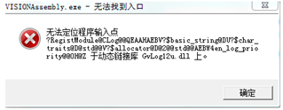
现象： 出现“无法定位到程序输入点”报错
原因： 服务没有正常卸载，甚至还在运行，它占用写日志的库文件，导致这个库文件不能被替换
解决办法： 手动卸载服务（详细操作见附录3“手动卸载服务”）
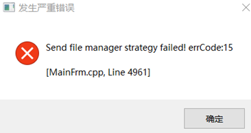
现象：出现弹窗报错“Send file manager strategy failed! errCode:15”
原因： 可能是服务进程当前非运行状态，已停止运行
解决办法： 手动重启服务进程（备注：详细操作见附录2）
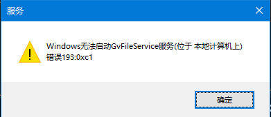
现象： 重启服务时，出现“无法启动GvFileService服务 错误193:0xc1”弹窗报错
原因： 可能系统安装盘根目录下有“program”文件导致
解决办法： 将系统安装盘根目录下“program”文件删除；然后再重启服务
通过任务管理器—>服务—>找到服务（如：GvCacheService），可查看服务当前状态；
备注：正常情况下状态为正在运行，若状态为已停止则需手动重启服务；详细操作见附录2“手动重启服务”
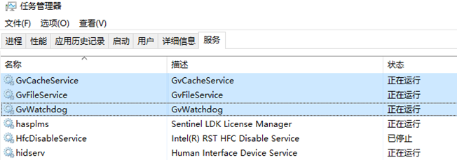
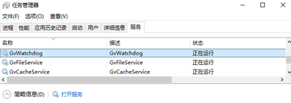
现象： 任务管理器中服务状态显示为已停止
解决办法： 手动重启服务；选中服务（如：GvWatchdog），右键菜单，点击开始；Windows7系统需打开服务界面对服务进行重启，步骤如下：任务管理器—>选中服务—>右键菜单—>打开服务—>找到服务—>右键菜单—>启动
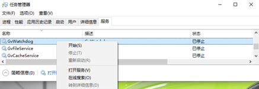
方式1： 在VA软件安装路径下，找到“ServicesUninstall”(批处理文件格式)，右键菜单，通过管理员身份运行
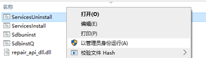
方式2： 通过使用CMD命令卸载服务
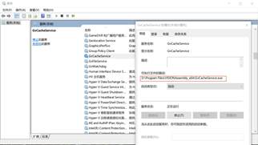
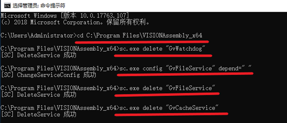
第1行命令：cd C:\Program Files\VISIONAssembly_x64 （切换至服务的安装路径）
第2行命令：sc.exe delete “GvWatchdog” （卸载“GvWatchdog”服务）
第3行命令：sc.exe config “GvFileService” depend=“ ” （去掉依赖）
备注：Windows7系统时“=”后面要加空格
第4行命令：sc.exe delete “GvFileService” （卸载“GvFileService”服务）
第5行命令：sc.exe delete “GvCacheService” （卸载“GvCacheService”服务）
软件安装路径下找到“Servicesinstall.bat”,右键菜单以管理员身份运行
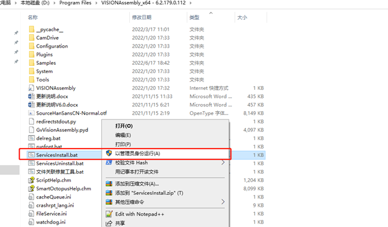